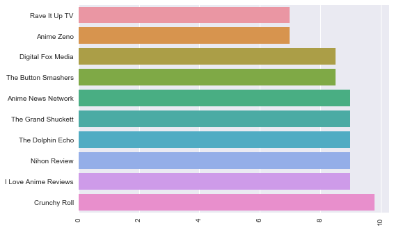
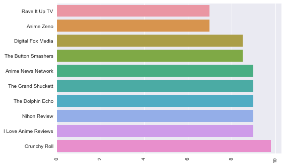

Re;AnimeSan
Re;AnimeSan
 Re;AnimeSan
Re;AnimeSan
 
Japanese Title: Haikyuu!!
Related: Haikyuu!! Second Season (included in review)
Similar: Free! Iwatobi Swim Club
Ace of Diamond
Prince of Tennis
Watched in: Japanese
Length: 25 episodes (season 1), 25 episodes (season 2), 2 OVA + more on the way
Positives:
Negatives:
For the next step on my sports anime journey, I went with the highly recommended Haikyuu!! (The double exclamation triggers me. It’s simply not right!) Never watched a game of volleyball in my life, but let’s go!
In his first volleyball match, middle-schooler Hinata gets stomped. And I mean stomped, worse than Germany versus Brazil (7-1 never forget). He decides the enemy ace, Kageyama, is his new rival, works hard, and gains entry in Karasuno High School, a good institute for volleyball, hoping to rise up and defeat Kageyama on the big stage. However, Kageyama took a downturn in recent times, rejected from the top volleyball school, and has ended up in the same school as Hinata. Rivals become teammates.
Hinata is a fantastic character. He may be a midget – people often forget he’s there – but he sure can jump. His energy and enthusiasm are infectious, except before matches, where he gets so nervous that telling him not to be nervous gives him the runs. Interestingly, despite falling into the typical shounen protagonist archetype (genki underdog) like Naruto and Luffy, Hinata is one of my favourites in Haikyuu. Usually, the cheerful protagonist is bland compared to the varied supporting cast. Hinata succeeds, I feel, because the underdog status is genuine. He doesn’t have the magic ability to win when the plot needs it. He has his role in the team as a Spiker and doesn’t overshadow the rest of the cast. ‘Less is more’ in action.
Opposite him, Kageyama is obsessed with winning. Not in the same way as Hinata, but in a manner that destroys any hope of success, as he berates his teammates for the slightest mistake. If he were company CEO, he would be over everyone’s shoulder on all twenty floors of the building at all times. And as Hinata’s rival, he’s tall – naturally. He plays the Setter position – sets up the ball for the Spiker.
First, the boys must learn to get along as teammates; otherwise, they can forget victory, let alone a championship. Their only chance at breaking the barriers is the captain. There’s also Noya in the Libero position (defensive specialist), a noisy fellow and the only guy shorter than Hinata – another great character. In fact, every character on the team is solid. Again, I think it comes back to the balance between Hinata and everyone else – the supporting cast doesn’t feel like they exist solely for him.
The funniest character is Tanaka, a guy who wants to look and act like a hard-ass intimidating newbies in a comical manner until the captain reins him in. Humour is never far away in Haikyuu and I worried about whether it could get serious enough when needed. Now, a super heavy moment hasn’t occurred in the two seasons so far, but when there has been weight in a scene, the tone has given just enough ‘serious’ for me to believe it.
As for the sport itself, Haikyuu does an excellent job illustrating the gameplay for anyone to follow, even the uninformed like me. The story also isn’t bogged down with explanation either, unlike battle anime. The strategies have variety, character psychology plays a big part, and everyone has strengths and weaknesses on court. The crowd even features Japan’s crazy coordinated chants!
The best aspect of the sport is its understanding of what it means to lose and the effect a loss has on players. This is what distinguishes Haikyuu from run-of-the-mill competitive anime like Food Wars. The writer doesn’t treat the characters like infants locked into a safe space, and knows that losses provide the greatest opportunities for learning.
If Haikyuu could find room for improvement, it would be outside the volleyball. There isn’t any story beyond the sport. It’s all about practicing volleyball, studying volleyball, and playing volleyball, which creates a lower ‘intensity’ ceiling than if there was more beyond volleyball. That’s not to say Hinata needs to come from some abusive home or live on the streets. It could be as simple as a romance affected by Hinata’s commitments to volleyball. Perhaps later seasons will introduce something.
Haikyuu is very “shounen” in its use of grandstand challenges, too many speeches, intense glares, over assignment of god-like titles to characters, and inspirational scenes. They aren’t realistic by any stretch. However, I have learnt to embrace them – you have to or there’s no way to enjoy hot-blooded sports anime.
After I finished Haikyuu, I watched a real volleyball match for the first time and it was phenomenal, probably one of the best matches in volleyball history (Women’s Japan versus China at the London Olympics – highly recommended). Japan even had someone shorter than Hinata playing Libero position! Haikyuu is the best shounen sports anime I have seen so far.
Art – High
Haikyuu is colourful like Hinata’s hair and sports great animation during the action. Simple, yet memorable character designs – expressive too.
Sound – High
Great acting brings this energetic cast to life and are even believable in otherwise unbelievable shounen dialogue. Good music, but nothing outstanding.
Story – High
A short but high jumping kid works with his team to reach the apex of high school volleyball. Though Haikyuu has little story outside of the volleyball, the conflict and development within the sport itself is excellent.
Recommendation: Try it/must for sports fans. If you’re a sports anime fan, Haikyuu is necessary, while I urge others to give a try, even if disinterested in volleyball.
The anime Haikyuu!! has given the sports anime genre a whole new meaning with action, comedy and the dramatic problems that athletes can face on their journey to success, especially when your only 5-feet tall!
Haikyuu!! features a small high school boy, Hinata Shoyo, who has a dream of becoming the best volleyball player in Japan. Following his idol (the tiny giant), he ends up attending Karasuno High School to pursue his dream. Once Hinata makes it into the volleyball team, he meets the arch rival from his past, Kageyama. It only gets worse when he finds out that they must both work together if they want it make it to Nationals. Dealing with rivals, challenges and proving who is on top, this show is one to watch.
The introduction of Hinata himself and who he is as a person is small, but the introduction to his hopes and his dreams is large as it shows you what he dreams of with a detailed explanation of what he wants to become. One of Haikyuu!!’s forms of entertainment is its witty comedy, which is greatly used when it comes to Hinata trying to succeed but failing miserably. Hinata himself is a loveable idiot that tries to succeed when he is greatly disadvantaged but that doesn’t stop him from trying. Hinata isn’t just a lost cause when it comes to playing volleyball as he is extremely gifted when it comes to jumping. When Hinata joins Karasuno High School and has an unexpected meeting with his arch enemy Kageyama, they both discover their power house manoeuvre. They are quick to be included in the team and are ready to be on top.

Sports animes are a special type of anime. It takes a lot of work for sport animes to become well-known as some can focus on the drama instead of the action, but Haikyuu!! was easy to love. When I saw the artwork in action and the team Karasuno playing against other teams, it made it easier to get drawn into, as it is filled with lots of definition in the characters and their surroundings.
Another thing that a sports anime must have is drama, which isn’t shown as much as it should, but you will be shown the hardship of Hinata and especially Kageyama. The most important thing about a sports anime is the action which is easily shown in Haikyuu!! when two teams face off in tournaments or just simple games. Personally, the action in this anime is amazing. Even when they are playing a practice match against other teams, it would still be treated and shown as if it was a ‘full on’ game.
Other characters that you will meet don’t all have strong back stories but each and every character has their unique personality. This is all contributes to this anime, making it funnier, more dramatic and most importantly, entertaining. The artwork and definition in characters is simply to die for as it gives amazing shading and contrast in colour, while still abiding by simple anime artwork so then it turns more into reality than cartoons. The backgrounds are not in the same league as the characters artwork which is quite disappointing in my opinion. It shows simple colours that don’t give a more life-like vibe, but it doesn’t make this show any less interesting or entertaining.
In summary, this anime is one of the best sports animes I’ve watched because of its jammed packed ball of action, drama and comedy. Not only is this season filled with action and drama, it is also very popular due to its inspirational characters that honestly made me want to pursue volleyball for a short period. The only downfall was some of the backgrounds were shown unnecessarily that drew my attention away from the characters, but the good story line made up for it.
Positives:
Negatives:
Title: Haikyuu!!
Genre: Action/Drama
Company: Production I.G.
Format: 25 episodes
Dates: 06 Apr 2014 – 21 Sept 2014
Synopsis: Hinata Shoyo dreams of playing volleyball, just like his idol the Little Giant. In Junior High, his thrown-together team is thoroughly crushed by another school led by setter, Kageyama Tobio, the “King of the Court”. Hinata swears revenge against the King, only to discover upon joining the Karasuno High School volleyball club that Kageyama is not his adversary, but his new teammate. Together with the other players, they have to battle hard to regain their schools reputation as one of the best in the prefecture.
The Highlights
Sports tropes: Present but masterfully executed.
Players: A well balanced and likable cast.
Volleyball: Used effectively and mostly explained for those not familiar with the sport.
That feeling when your team leaves it all on the court: Captured perfectly.
I watched this entire series with a huge smile on my face. I couldn’t help it. Haikyuu!! is not a show that defies convention or breaks down the tired clichés of sports anime. Indeed, it features all of the touches one would expect: the flash-backs, time-stopping internal monologues, super slow motion and games that span several episodes. Yet it uses these techniques extremely well to capture the emotional rush of competitive team sport. This is very much a sports anime, but the fantastic execution makes it one of the best in the genre.
Haikyuu!! does what all great sports anime need to do: it makes it fun. First, it uses the sport of volleyball to its advantage. Volleyball is not a sport where one player can dominate. It requires a team effort with the players working together. For those not familiar with the sport, the show provides side commentary to explain what’s happening, from the basics of the sport to the strategies employed by the show’s top teams. While the plays and skill of the players are exaggerated, they never quite feel ridiculous and no player is without weaknesses. The series also takes the time to explore the roles leadership, strategy and the ‘mental game’ play beyond the core strength and skill of the players in earning a victory.
Secondly, the show employs great direction and pacing. The games, aside from one later in the series, never drag and feature some dynamic angles and smooth animation. The impact of a spike hitting the floor feels as though it carries weight of the whole team with it. The dramatic and action-filled moments are balanced with well-placed and well-timed comedy moments that not only lighten the tension but also work to develop the characters. It’s clear a lot of care was put into the details, from the facial expressions to the movement of the ball to the charming eye-catches bracketing the commercial break.
Lastly, the players on Karasuno’s roster are distinctive and likable. While they can be quickly categorized according to sports anime archetypes, they have enough personality and heart to grow beyond their established roles. Hinata’s childish tenacity pairs well with Kageyama’s pride, but the two never overshadow the goals and battles of their various teammates. Each player is given their own character arc and moment to shine, whether in success or in failure.
Haikyuu!! is notable in that the story never strays from volleyball. The characters are not shown dealing with school, family or any other issues beyond the court. The story stays focused, but because the narrative can bounce to different players, it never feels stale. Haikyuu!! is also fairly unique in that it portrays the opposition not as evil adversaries, but as players who have the same goals and aspirations as the Karasuno players. Several flashbacks tell the story of these opposing teams, leaving me almost rooting for them.
Most of all, Haikyuu!! captures what it means to play comparative team sports. The intensity of the game, the rush of victory, the agony of defeat, the passion you feel inside — it’s all here. These are the joys of sport and the reason why we play. There’s nothing else like it. At the end of episode 24, after the credits, there’s a short segment that perfectly illustrates the release of built up emotions. Moments like these show the creators got it.
Haikyuu!! is built from a familiar template, but its characters, emotion and storytelling show why the formula works. I had a blast.
The Rating: 9
Reviewed by: Kaikyaku